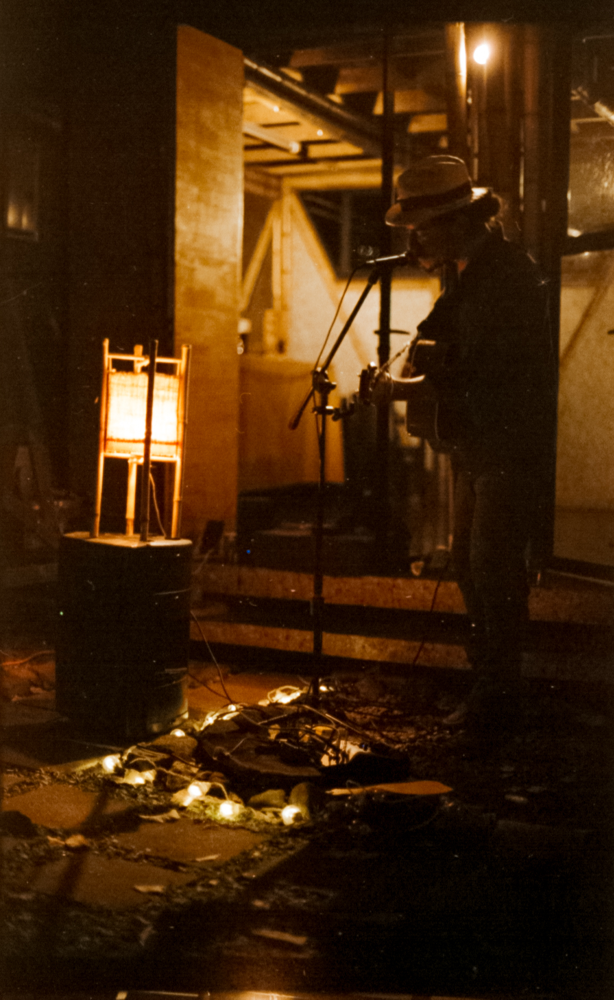

Pablo es un artista que crea ambientes sonoros llenos de catarsis y descarga emocional. Apasionado por la música como elemento unificador, Hellmund persigue un ideal de sanación a través del sonido.
Su trasfondo en la cultura DIY y punk rock lo han inspirado a ser el artífice detrás la grabación / producción de su propia música al igual que sus videos y otros artes visuales.
El minimalismo instrumental de su proyecto le ha permitido aparecer y desaparecer como un espectro en diferentes escenas y momentos de diversas movidas culturales, habiendo dejado hasta el momento una influencia sutil pero certera en algunos lugares, personas, y sus respectivas escenas de música independiente.
Pablo escribe canciones desde una necesidad básica de asimilar los tropiezos y los triunfos de su vida.
Atravéz de sus letras de ensueño no trata de esconder su oscuridad emocional, sino exponerla en su más cruda naturaleza, pues solo así es posible sanar las heridas.
Nacido y criado en Costa Rica, siendo el resultado de una mezcla de ancestros Holandeses, Españoles e Indígenas; Hellmund no representa a nadie en particular, solo a sí mismo en el camino solitario de su vida.
La primera obsesión del bebé Papus fue una guitarra plástica de juguete que le regalaron sus padres, cuando aún era un minúsculo chiqutín.
Desde entonces sus ojos brillaron cada vez que vió una de estas cosas, ya sea las guitarras eléctricas en la tele o la vieja guitarra española de su Abuela. Esta fijación se mantuvo hasta encontrarse a si mismo tocando en bandas de punk rock junto a otros adolescentes espinilludos de Costa Rica.
Honrando la filosofía HTM (hazlo tu mismo - DIY) se abrió un camino autodidacta en el arte de grabar, mezclar y producir música... una serie de habilidades que utilizó para co-producir grabaciones para bandas de amigos como Bulletproof, Sinchema y Malas Palabras. Y claro que también para luego grabar sus propios proyectos musicales.
En esta misma época emprendía una especie de catársis terapeutica con su ex-grupo Kerosene, proyecto musical que se vió abruptamente interrumpido por la oportunidad de vivir en Groningen (Holanda) por 6 meses.
En los Países Bajos Pablo merodeaba en su bicicleta con la guitarra al hombro, tocando en okupas, en las calles y participando con su música en diferentes proyectos de cultura libre y alternativa junto con otrxs músicos jovenes como Migloko, Jan Roelof Bathoorn, Las Shitfaced Mermaids, Stout & Hering y otros!
Durante este tiempo, enamorandose de la gente local y su subcultura, Hellmund se las arregló para armar un pequeño EP llamado Raissa en el fondo del mar compuesto de algunas canciones viejas y otras más recientes en aquel momento. El disco fue lanzado bajo su apodo de toda la vida Papus, que ahora era también su nombre artístico. Pero pronto esta aventura tenía que llegar a su fín.
Febrero 2015, de vuelta en Costa Rica y el shock cultural inverso fué tremendo golpe para Pablo.
Sigue escribiendo canciones en la oscuridad, pero no toca más de una docena de conciertos en un lapzo de 5 años, uno que él llamaría su noche oscura del alma.
Marzo 2020, listo para volver a los escenarios... y el Covid-19 golpea al mundo.
PH aprovecha la cuarentena para grabar música y el 5 de Junio 2020 lanza su primer álbum de larga duración titulado "Corazón de Fuego".